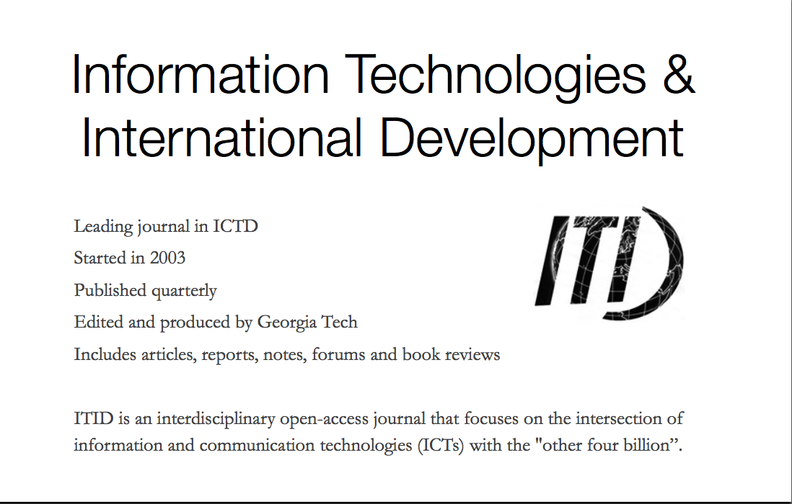

Presentation
One assignment during this course allowed me to examine a year's worth of journal articles with two other classmates and draw out trends from what we read. I used this opportunity to examine the journal of Information Technology and International Development (ITID), the leading journal in ICTD.
Through our evaluation we noticed a trend of researchers from western nations studying non-western subjects, though there were also non-western researchers getting published. We also observed that researchers who studied in their own countries tended to have access to larger data sets and use more data in their research. Furthermore, a divide was apparent between articles that sought to discover the values of participants, and studies that started with a predefined problem and sought to develop a system to address that problem.
Through this evaluation I was able to delve deeply into the field of ICTD and examine its particular tensions. I learned to look beyond an individual article to consider how it relates to other research in similar communities. I also learned to judge research not only by broad qualities of good empirical research, but also the unique traits promoted by the field it is situated in.


acrule [at] uw [dot] edu
© 2012 Adam Rule